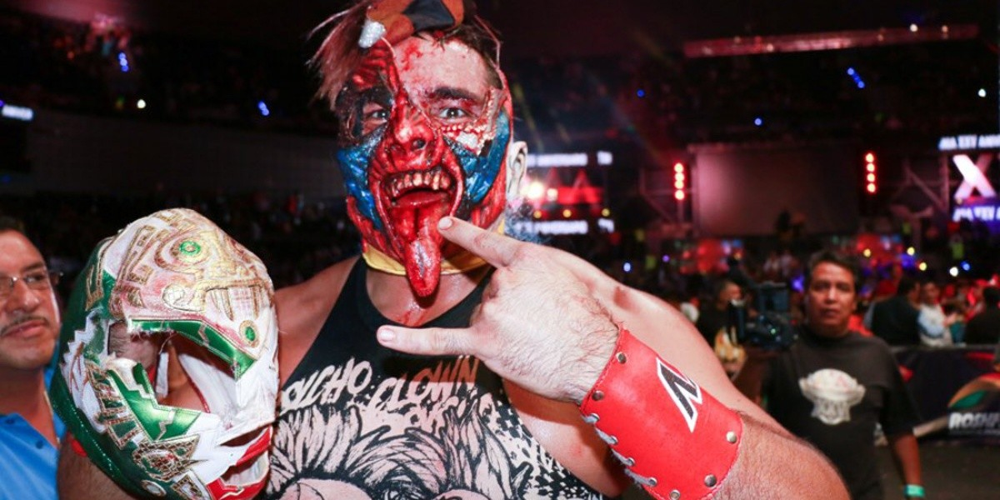

Nombre real: no revelado públicamente
Fecha de nacimiento: 16 de diciembre de 1985
Lugar de nacimiento: Ciudad de México, México
Alias: Psycho Clown
Miembro de la familia Alvarado, Psycho Clown comenzó como parte de los Psycho Circus. Es uno de los luchadores más populares de AAA.
Ha tenido intensas rivalidades con Pagano, Dr. Wagner Jr. y LA Park, en batallas icónicas dentro de AAA.
Pertenece a la dinastía Alvarado (familia de los Brazos). Continúa siendo uno de los estandartes de AAA.